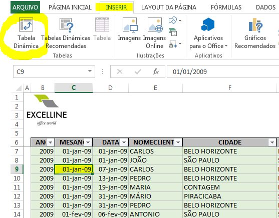
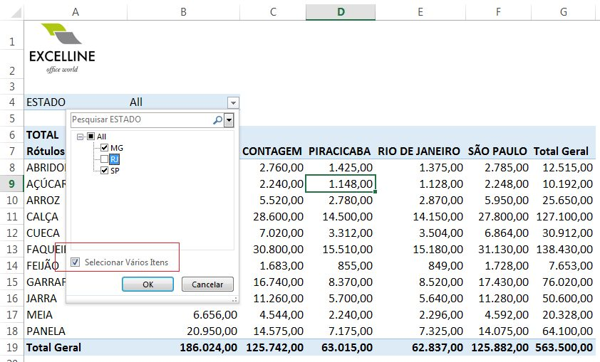
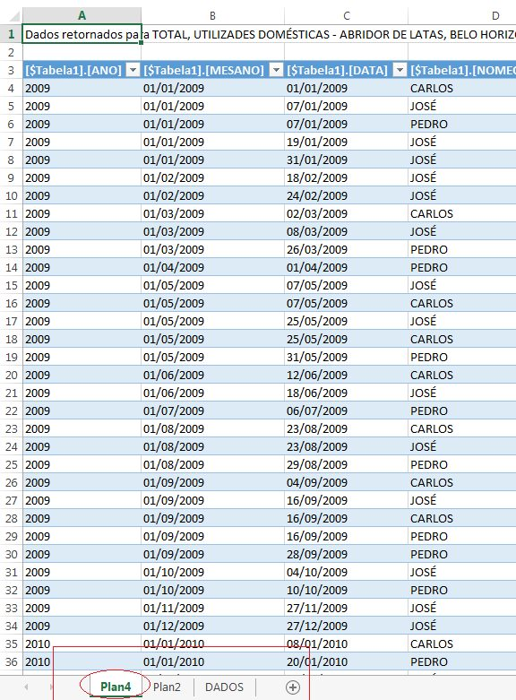

Imagine uma tabela com quase 30 mil linhas, cada uma uma venda, com produtos vendidos a clientes de várias regiões do país ao longo de anos. O diretor pede um quadro com a quantidade vendida de clientes por produtos num período e você passa o dia montando e ele olha e diz que pensando bem prefere o valor total por estado e categoria e com outro período. Seria ótimo ter um mecanismo para gerar esses quadros de forma dinâmica e esse recurso é a tabela dinâmica.
Baixe a planilha do exercício: modelo-excel-tabela-dinamica.xlsx. Ela traz os exemplos deste capítulo com as fórmulas funcionando: altere os valores azuis e veja o resultado. Traz a base de vendas pronta para virar tabela dinâmica e um quadro por fórmulas que mostra fato, métrica, dimensão e filtro funcionando. A tabela dinâmica propriamente dita você cria em menos de um minuto, pelo passo a passo que vai junto.
Conceitos
A tabela dinâmica existe no Excel desde a década de 90, é muito poderosa e ainda desconhecida pela maioria. Ela se organiza em quatro ideias.
- O FATO, ou valor, é o elemento numérico que queremos analisar, como o total de vendas ou a quantidade vendida.
- A MÉTRICA é a operação aplicada ao fato, como soma, média, máximo, mínimo ou desvio.
- As DIMENSÕES são os pontos de vista da análise, colocadas em linhas ou colunas. A soma do valor total por estado e por produto tem estado e produto como dimensões.
- Os FILTROS permitem que o leitor escolha o que quer ver, como um único estado.
Criando a tabela
Clique em qualquer célula da lista e use INSERIR, TABELA DINÂMICA. O intervalo de origem já vem preenchido porque o Excel detectou a lista e vale marcar ADICIONAR ESTES DADOS AO MODELO DE DADOS, que potencializa a tabela quando chegarmos à segmentação de dados. O destino pode ser uma planilha existente ou uma nova.

À direita aparece o painel com a lista de campos e quatro áreas: FILTROS, LINHAS, COLUNAS e VALORES. Arrastando VALORPRODUTO para VALORES temos o primeiro resultado, a soma de todos os valores. Em CONFIGURAÇÕES DO CAMPO DE VALOR trocamos o nome para TOTAL, mudamos a métrica se quisermos média em vez de soma e aplicamos o formato de número com separador de milhar.
Arrastando NOMEPRODUTO para LINHAS temos o mesmo total quebrado por produto e arrastando CIDADE para COLUNAS temos o total por produto e por cidade. Com ESTADO em FILTROS o leitor escolhe um estado, vários ou todos.

Para ver por que se chama dinâmica, inverta os eixos arrastando os campos de lugar, ou coloque CATEGORIA antes de NOMEPRODUTO nas linhas e a tabela se reorganiza na hora. Para acabar, DESIGN, FORMATAR COMO TABELA aplica um visual.
Detalhar com duplo clique
Atrás de cada valor existem várias linhas que foram totalizadas. Para saber quais vendas de ABRIDOR DE LATAS em BELO HORIZONTE somaram 4.170, basta um duplo clique no valor. O Excel cria uma nova planilha com os registros de origem e você pode apagá-la sem afetar os dados originais.

Atualizar
Quando a origem muda, com vendas novas, quantidades alteradas ou linhas removidas, clique na tabela e use ATUALIZAR para recalcular. Também é possível marcar ATUALIZAR DADOS AO ABRIR O ARQUIVO nas OPÇÕES DA TABELA DINÂMICA.
Quando bastam funções
Se a necessidade é apenas um número em uma célula, como o total de uma região, as funções SOMASE e CONT.SE resolvem sem montar uma tabela dinâmica.
Veja também. Para ir além do básico, veja a tabela dinâmica a partir de um banco de dados, e para resumos que se recolhem e expandem sem tabela dinâmica, os subtotais e o agrupamento de dados.
Veja também. Um exemplo de tabela dinâmica aplicada a uma safra de cobranças, por vencimento, está em Cobrança que performa, parte 1.
Veja também. Para o passo seguinte à tabela de dados, treinar um modelo com SQL no banco de dados, veja BigQuery ML.
Comentários
Dúvida, discordância ou outro ponto de vista? Escreva aqui e eu respondo.